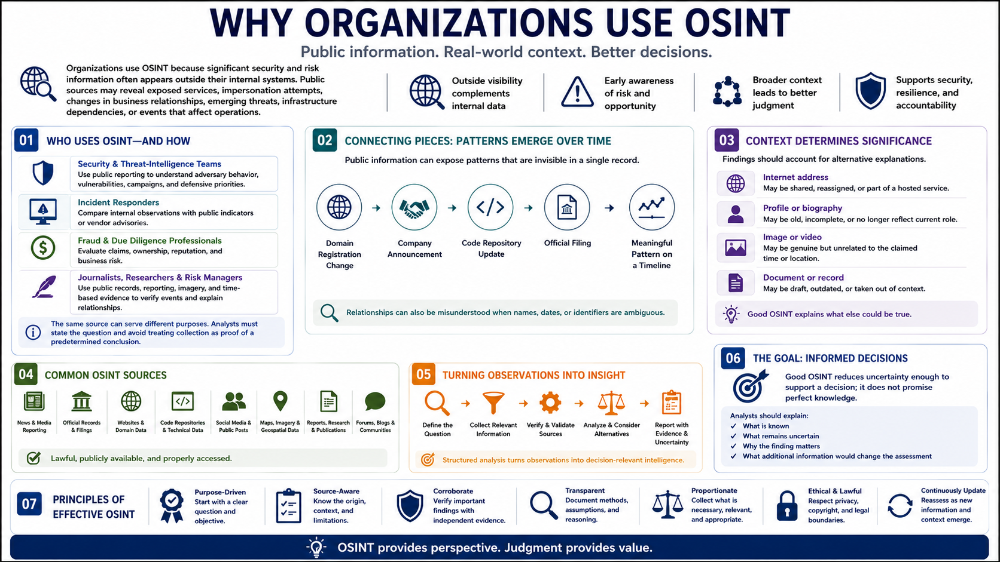

Why OSINT Matters
Connecting to LMS... Progress: in progress

Narration
Organizations use OSINT because significant security and risk information often appears outside their internal systems. Public sources may reveal exposed services, impersonation attempts, changes in business relationships, emerging threats, infrastructure dependencies, or events that affect operations.
Security and threat-intelligence teams use public reporting to understand adversary behavior, vulnerabilities, campaigns, and defensive priorities. Incident responders may compare internal observations with public indicators or vendor advisories. Fraud teams and due-diligence professionals may evaluate claims, ownership, reputation, and business risk.
Journalists, researchers, and risk managers use public records, reporting, imagery, and time-based evidence to verify events and explain relationships. The same source can serve different purposes, so analysts must state the question and avoid treating collection as proof of a predetermined conclusion.
Public information can expose patterns that are invisible in a single record. A domain registration change, a company announcement, a code-repository update, and an official filing may become meaningful when placed on a timeline. Relationships can also be misunderstood when names, dates, or identifiers are ambiguous.
Context determines significance. An internet address may be shared, reassigned, or part of a hosted service. An old profile may no longer describe a person's role. An image may be genuine but unrelated to the claimed time or location. Findings should account for these alternative explanations.
Good OSINT reduces uncertainty enough to support a decision; it does not promise perfect knowledge. Analysts should explain what is known, what remains uncertain, why the finding matters, and what additional information would change the assessment.